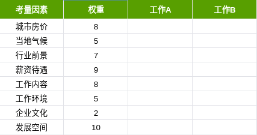
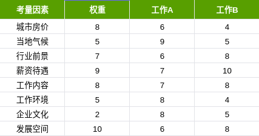
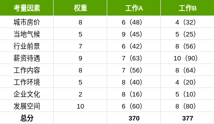

分享两个决策方法WCCA和WADM
分享两个决策方法WCCA和WADM
前几天，朋友给我推荐 MJ DeMarco 的《The Millionaire Fastlane》，里面提到两个帮助我们更好地作出决策的方法，非常实用，分享给大家！
- WCCA（最坏情况后果分析，Worst Case Consequence Analysis）
- WADM（加权平均决策矩阵，The Weighted Average Decision Matrix）
相信大家在日常工作、学习、生活中常常面临选择，比如该选哪份工作？该去哪个城市发展？要不要复读？该选哪个专业？要不要买房？在哪里买房？要不要和这个人交往？等等…… 这些困扰我们的问题非常常见，我也在知乎上经常收到类似的问题。更重要的，决策具有蝴蝶效应，你当下所作出的决定会影响到后续的发展，糟糕的决定甚至一生都难以弥补。
因此，我们需要重视，如何更好地作出决策。如果你还没有自己的一套思维方法，那么 WCCA 和 WADM 分析法可以帮到你～
WCCA
WCCA 即“最坏情况后果分析”，需要你具备前瞻性的思维，并进行潜在的后果分析。在面临选择的时候，需要我们回答三个问题：
- 这个选择最坏的后果是什么？
- 这种后果的概率是多少？
- 这是一个可以接受的风险吗？
虽然这三个问题看起来有点冗长，但其实你的分析过程用不上几秒钟，你甚至不需要拿出纸和笔，仅凭大脑思考即可作出有意识的选择。当你习惯于用 WCCA 方法分析问题时，那些潜在的不良因素就会暴露无遗，负责任的你显然可以轻易地将坏的选项排除掉，选择更好的替代方案。
举个例子，你有一个很想买的东西，但是贼贵。就在你即将付款的时候，想起了 WCCA，于是你问了自己这三个问题，你的答案可能是：
- 最坏结果是还不上花呗/信用卡；
- 概率是肯定会发生，因为上个月的还没还清；
- 风险有点大，要是利滚利肯定无法接受。
所以你决定还是就此打住吧，先别买了。
你的答案也可能是这样：
- 最坏的结果是效果不满意，浪费钱；
- 概率是10%，但是大部分人都说好；
- 风险可以接受，大不了节衣缩食一个月。
所以你决定把它拿下，好好犒劳自己。
WADM
与 WCCA 不同的是，WADM 需要坐下来慢慢算。WADM 即“加权平均决策矩阵”，分析步骤主要分为三步：
列出需要考量的因素，并给每个因素设置权重；
依次给不同选项的对应因素打分；
加总不同选项的权重，选择总分高的那个。
举个例子，你在找工作，面试了几个月，对其中两份比较满意，但是难下决断。这时候，你想起了 WADM，于是拿出纸和笔计算：
列出最主要的考量因素，比如城市房价、当地气候、行业前景、薪资待遇、工作内容、工作环境、企业文化、发展空间等等，然后给每个考量因素设置权重。权重的设置可以按照分数打分（比如1-10分），也可以按照百分制设置不同的权重。

然后分别给两份工作打分（这个分数和权重无关）。

最后拿权重乘以每个选项的得分，并且加总算出总分。（可以用 Excel 或者 Numbers 里的
SUMPRODUCT函数得出总分）。
由于工作 B 的总分更高，表明它更符合你的预期，所以你的最终选择也就不难了。
总结
简而言之，WCCA 是一个几秒钟就能解决选择困难的技巧，可以很方便地应用在日常生活中。它更适用于对突发事件的快速决策，比如当你面对诱惑时，可以帮助你规避风险。
而 WADM 则更适用于重大事件的决策分析，根据你的预期和承受范围，权衡分析，得出更优解。与 WCCA 不同，WADM 的使用频率较低，一年可能也用不了几次，但在关键时刻能够很好地帮你分析问题、作出决策。
使用 WADM 方法的难点在于需要你列出最主要的考量因素，根据你的情况设置权重，并为每个选项给出合理的分数。因此需要你对自己以及问题所处的情况有一个良好的认知，才能得出更客观的答案。
最后，想要灵活运用 WCCA 和 WADM 决策方法，还需要你在日常生活中多加训练，不断总结，形成一套适合自己的决策思维模型。加油哦！

本博客所有文章除特别声明外，均采用 CC BY-SA 4.0 协议 ，转载请注明出处！